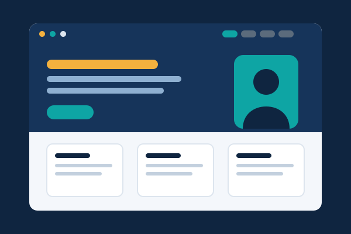

1. My Personal Portfolio Website
This is the website you are reading now. I designed it to show who I am, my education, and my skills. I used HTML for structure, CSS for design, and JavaScript for the planner and contact form.
Visit project